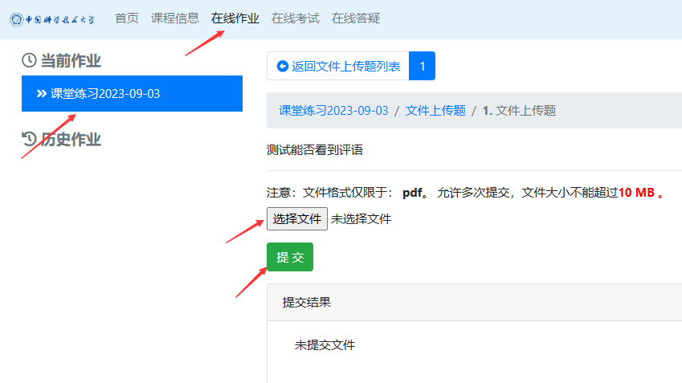
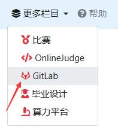
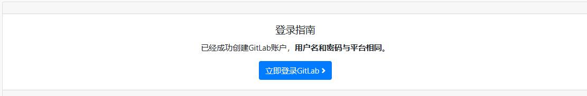

课程平台介绍¶
本课程使用希冀实验平台进行作业提交和在线评测，同时使用 git 和 GitLab 进行代码开发和项目管理。
希冀实验平台¶
网址：http://cscourse.ustc.edu.cn/
进入希冀平台后，使用学生入口填写学号（大写字母，如 PB20110001）和默认密码（与学号相同）登录。如果您已注册过希冀平台账号，请使用原密码登录。
在网页右上角选择“编译原理和技术”课程实验平台。
首次登录希冀平台时，请记得修改默认密码并完善个人信息。
在希冀平台，您可以查看最新公告、作业和截止时间。请注意，所有作业和实验都需要在平台上提交和批改。
作业及实验提交¶
在课程平台左上角选择当前作业，在线提交如下：

- 请提交作业和实验报告的 PDF 文件，确保照片部分清晰可读。如果因图片清晰度问题而导致扣分，则不接受相关的申诉。
- 提交作业不接受迟交或补交。
- 实验提交在该平台进行，详细说明将在实验发布时提供。
作业和实验报告撰写推荐使用 Markdown，简单易学易上手。
Markdown 相关阅读材料：https://markdown.com.cn/basic-syntax/
Markdown 是一种轻量级标记语言，排版语法简洁，让人们更多地关注内容本身而非排版。它使用易读易写的纯文本格式编写文档，可与 HTML 混编，可导出 HTML、PDF 以及本身的 .md 格式的文件。因简洁、高效、易读、易写，Markdown 被大量使用，如 GitHub、Wikipedia、简书等。
Git & Gitlab¶
本课程使用 Git 进行代码版本管理，结合 GitLab 进行远程代码托管。
Git is a free and open source distributed version control system designed to handle everything from small to very large projects with speed and efficiency.
Git is easy to learn and has a tiny footprint with lightning fast performance. It outclasses SCM tools like Subversion, CVS, Perforce, and ClearCase with features like cheap local branching, convenient staging areas, and multiple workflows.
GitLab 是一个用于仓库管理系统的开源项目，使用 Git 作为代码管理工具，并在此基础上搭建起来的 Web 服务，可通过 Web 界面进行访问公开的或者私人项目。它拥有与GitHub类似的功能，能够浏览源代码，管理缺陷和注释。
在本课程实验中，你将使用 git 进行版本管理，需要至少掌握以下指令：
- git init
- git add
- git commit
- git clone
- git merge
- git branch
- git pull
- git push
参考阅读材料：https://www.liaoxuefeng.com/wiki/896043488029600
GitLab 是一个代码管理平台。关于 GitLab，你至少需要掌握以下概念：
- ssh key
- project private and public
- watch, star and fork
- ……
参考阅读材料：https://www.liaoxuefeng.com/wiki/896043488029600
要访问 GitLab，请点击实验平台右上角的导航栏。

若尚未设置电子邮箱账号，请进行注册。注册成功后 GitLab 用户名和密码和希冀平台相同。
请注意，不要更改 GitLab 账户用户名，因用户名导致的错判漏判，一律不接受申诉。
